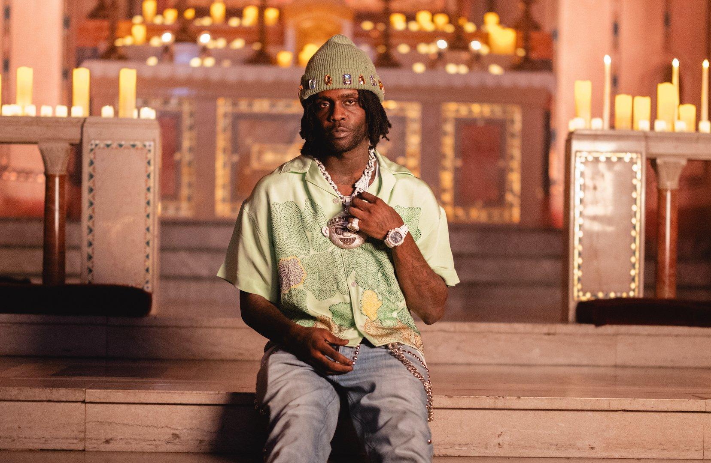

Keith Farrelle Cozart, known professionally as Chief Keef, emerged from Chicago's South Side to fundamentally reshape hip-hop in the 2010s. As the teenage architect of drill music, Keef's raw, unfiltered approach and distinctive production style influenced an entire generation of artists and permanently altered the sonic landscape of rap.
Chief Keef's ascent began while he was still a teenager in Chicago's Englewood neighborhood. In 2011, while under house arrest at his grandmother's home, he released videos for songs like "Bang" and "I Don't Like," filming them with basic equipment in his home. These videos went viral locally, capturing the harsh realities of Chicago's South Side with an authenticity that resonated deeply. When Kanye West remixed "I Don't Like" in 2012, featuring Pusha T, Big Sean, and Jadakiss, Chief Keef was catapulted to national attention. This momentum led to a bidding war among major labels, with Keef eventually signing to Interscope Records for a reported $6 million deal at just 17 years old. His debut studio album Finally Rich (2012) featured hit singles like "Love Sosa" and "Hate Bein' Sober," establishing drill music as a dominant force in hip-hop.
Chief Keef's music is characterized by its minimalist production, Auto-Tuned vocals, repetitive hooks, and nihilistic lyrics that unflinchingly document street life. The production style he pioneered with collaborators like Young Chop—featuring aggressive 808s, rapid hi-hats, and ominous synths—became the blueprint for drill music and influenced trap production worldwide. Beyond his sonic innovations, Keef's impact extended to fashion, slang, and internet culture. As his career progressed, he became increasingly experimental, releasing projects that pushed the boundaries of conventional rap and embraced a more abstract, avant-garde approach, particularly after parting ways with Interscope. This experimental phase has earned him a reputation as not just a commercial pioneer but an artistic innovator whose influence spans both mainstream and underground hip-hop.
For Newcomers: "I Don't Like," "Love Sosa," "Faneto," "Hate Bein' Sober"
For The Dive: "Citgo," "Nobody," "Earned It," "Fool Ya"
Hidden Gems: "Ight Doe," "Macaroni Time," "In This Bitch," "Almighty So"
Chief Keef's legacy extends far beyond his commercial success. As the primary architect of drill music, he created a sound that has become global, influencing scenes from Brooklyn to London to Ghana. His impact can be heard in the music of artists as diverse as Pop Smoke, Playboi Carti, Lil Uzi Vert, and YoungBoy Never Broke Again. By bringing the raw reality of Chicago's streets to the mainstream, he gave voice to a community often overlooked and created opportunities for countless artists from similar backgrounds. His business approach—maintaining independence, building his Glo Gang collective, and releasing music on his own terms—has also provided a template for artist autonomy in the streaming era. Despite the controversies and legal issues that have sometimes overshadowed his career, Chief Keef's position as one of hip-hop's most influential innovators of the 2010s is undeniable, with his early work now recognized as classics that fundamentally altered the course of rap music.
| Title | Year | Billboard Hot 100(US) | Hot R&B/Hip-Hop Songs | RIAA Certification |
|---|---|---|---|---|
| "I Don't Like" (Remix feat. Kanye West) | 2012 | 73 | 20 | Gold |
| "Love Sosa" | 2012 | 56 | 18 | 2× Platinum |
| "Hate Bein' Sober" (feat. 50 Cent & Wiz Khalifa) | 2012 | - | - | Gold |
| "Faneto" | 2014 | - | - | Platinum |
| "Earned It" | 2015 | - | - | Gold |
| Album | Certification (US) | Peak Chart Position (US) |
|---|---|---|
| Finally Rich | Gold | 29 |
| Bang 3 | - | 66 |
| Thot Breaker | - | 84 |
| 4NEM | - | 86 |